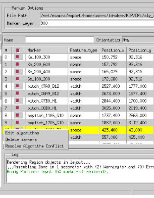
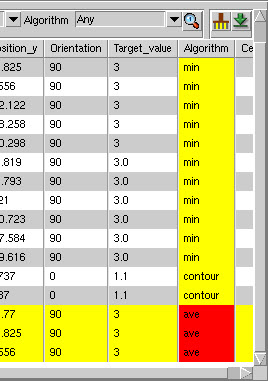
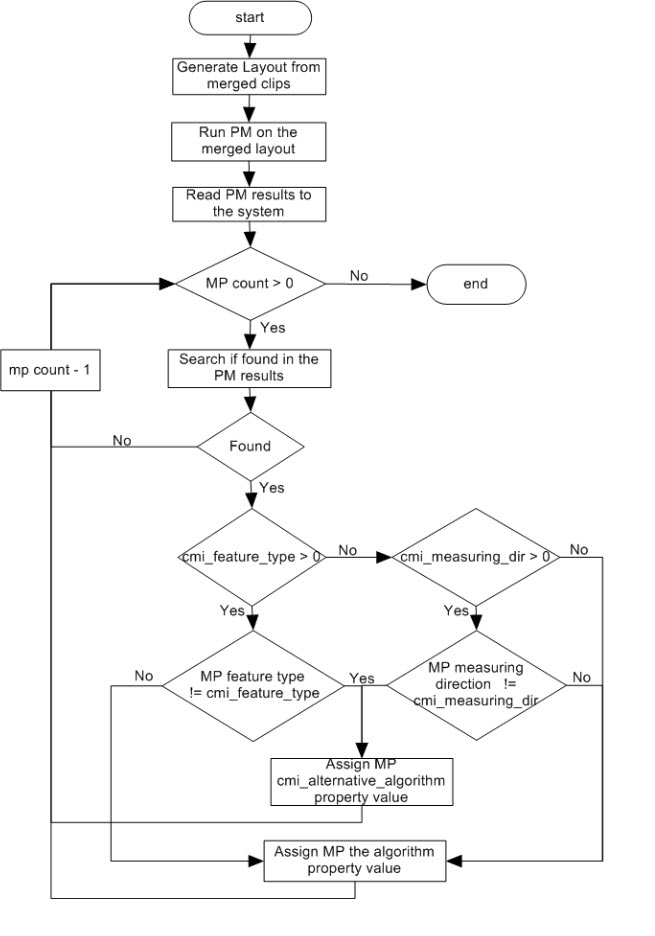

CMi users run
the automatic algorithm identification flow by just selecting compiled
encrypted SVRF version of the DMACRO pattern library.
CMi automatically generates a layout of merged
clips of the measurement points. The pattern matching run generates
the resulting RDB file that contains all the matched patterns. CMi
examines each measurement point against the result of matched patterns
in the RDB file, if exist the measurement point is assigned the
algorithm property attached to the matched pattern.
Procedure
- Invoke CMi.
- In the Job Configuration area,
click Metrology Algorithm under
the Site Automatic Adjustment section.
- Browse and select a compiled
pattern library.
- In the Metrology Algorithm
options, choose an Algorithm Conflict mechanism:
Override — Overrides the
user-specified algorithm for measurements, using the automatic algorithm
instead. This is the default.
Keep — Keeps the user-specified
algorithm and run the pattern matching on measurement points with
the NULL algorithm value only.
Show Conflict — Highlights
the measurement point with conflicts in the table. You can resolve
the conflict by right-clicking the highlighted row and choosing
to use either the pattern matching result or user-specified value.
- Specify Calibre run settings
in the Run Settings options:
- Click the Check Marker Algorithm and Type button
in the CMi button bar. The pattern matching run initiates.
- If a conflict appears, right-click
on the highlighted row and choose to resolve the conflict. Figure 1 shows a row highlighted with yellow
because the user value for the metrology algorithm is different
than the pattern matching result.
Figure 1. Conflict Highlighted
- Choose either to keep the
value calculated automatically, or to use the user value.
Right-click on the row with
the conflict and select the Resolve Algorithm Conflict menu
item. A pop up dialog box appears with options to either to select
the automatic identified value or the user-defined value. Markers
that are not assigned an algorithm are highlighted in red as shown
in Figure 3
Figure 2. Markers Not Assigned
Algorithms Highlighted
- When the CMi run is initiated:
- CMi generates clips with a
user-defined size around each measurement point, and merging the
generated clips in a single layout to reduce pattern matching run
time.
- CMi runs pattern matching
against the generated layout from the merged clips.
- CMi reads the RDB file generated
from the pattern matching run, then examines each measurement point
if exists within the extent of any of the pattern matching results.
If the measurement point is
found, CMi reads the properties attached to the pattern matching
result.
If the cmi_feature_type property
is defined, then CMi checks if the measuring point is measuring
Space or Width.
If the feature type of the
measuring point equals the default property value, the measurement
point is assigned the Algorithm property value; else, it is assigned
the cmi_alternative_algorithm property value.
The same is applied to cmi_measuring_dir.
If neither cmi_feature_type nor cmi_measuring_dir are assigned,
then the measurement point is assigned the Algorithm property value.
- The following flow chart illustrates
this flow in CMi.
Figure 3. Metrology Algorithm
Automatic Identification Flow